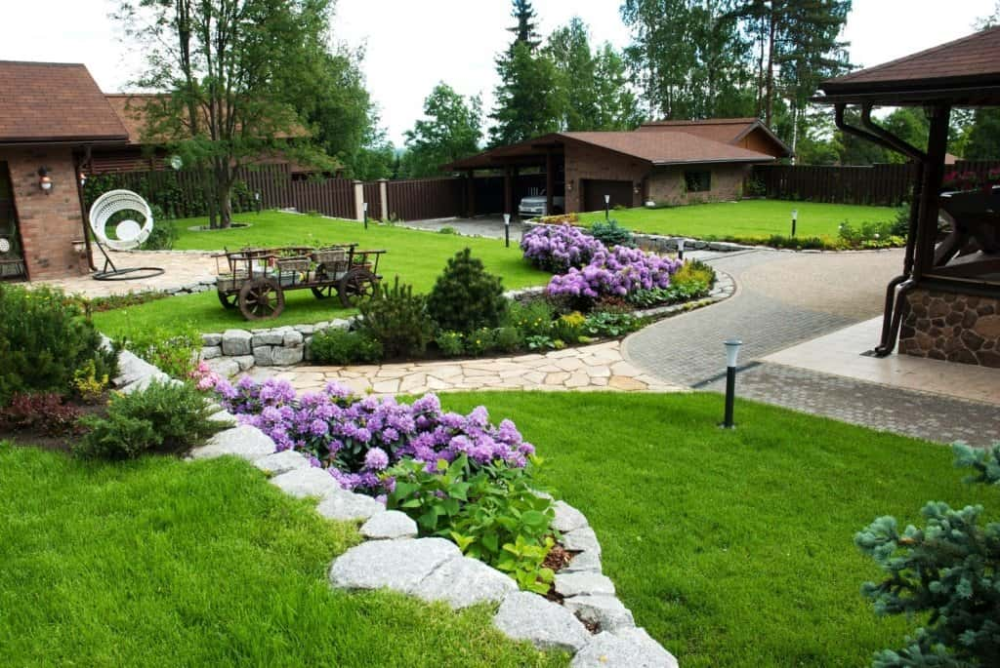

Подготовка проекта
Cогласование и правка проекта
Cдача проекта
заказчику
|
Вид работ |
Единица измерения |
Стоимость, Бел. Руб. |
|
|---|---|---|---|
|
Предварительные работы |
|||
|
1 |
Консультация по вопросам дизайна, ухода за растениями и пр. (до 5 км от МКАД в пределах 2 часа) |
консультация |
38 |
|
2 |
Съемка высот местности (на схеме указываются существующие высотные отметки и горизонтали, М 1:100) |
100 м.кв. |
20 (min. 150) |
|
3 |
Схема организации рельефа (на схеме указываются существующие и проектные высотные отметки и горизонтали, проектные уклоны, М 1:100) |
100 м.кв. |
30 (min. 150) |
|
4 |
Картограмма земляных работ (на схеме с сеткой квадратов приводятся объемы насыпи и выемки с суммарными данными; при необходимости отдельно указываются объемы по плодородному грунту) |
100 м.кв. |
20 (min. 150) |
|
5 |
Обмерные работы |
выезд |
от 30 |
|
6 |
Инвентаризация зеленых насаждений (схема или план расположения зеленых насаждений, ведомость инвентаризации) |
чел./час. |
18 |
|
Проектирование |
|||
|
1 |
Эскиз и дизайн-проект благоустройства и озеленения территории (объемно-пространственная структура малого сада; компьютерное исполнение и/или ручная графика). |
100 м.кв. |
30 (min 75) |
|
2 |
План посадок древесно-кустарниковых и цветочных растений с ассортиментной ведомостью посадочного материала (компьютерное исполнение) |
100 м.кв. |
30 |
|
3 |
Разбивочная схема (привязка и размеры зданий, сооружений, дорожек, архитектурных форм; компьютерное исполнение) |
1 м.кв. |
1 |
|
4 |
Схема расположения осветительных элементов с подбором дизайна светильников (компьютерное исполнение) |
100 м.кв. |
10 |
|
5 |
Схема раскладки мощения с подбором материалов (включая объемы материалов и разбивочную схему; компьютерное исполнение) |
100 м.кв. |
18 |
|
6 |
Разработка архитектурного элемента (пергола, беседка и т.д.) |
1 эл-т |
договорная (от 50) |
|
7 |
Эскиз водоема, каскада и т.п.(компьютерное исполнение и/или ручная графика) |
1 эл-т |
договорная (от 50) |
|
8 |
Разработка цветочно-декоративной композиции (подробный план посадок с учетом размеров растений, выполняемой функции, сезонности и пр.; компьютерное исполнение и/или ручная графика) |
м.кв. |
50 |
|
9 |
Письменные рекомендации по уходу за зелеными насаждениями |
1 комплект |
75 |
|
3D-визуализация |
|||
|
1 |
SketchUp |
75 |
|
|
2 |
3DsMax |
сцена (2-3 вида) |
225 |
|
3 |
Ручная |
перспектива |
45 |
|
* Примечание: 1. Стоимость указана без учета растений и материалов. 2. При выполнении работ на откосах, а также на особо уплотненных грунтах применяется коэффициент 1,25. 3. Выемка грунта на больших площадях производится техникой на договорной основе. 4. Данный прайс-лист предназначен для определения договорной стоимости выполнения работ на территории Беларуси. |
|||
При проведении благоустройства и озеленения ландшафтное проектирование – один из видов работ, которые проводятся дизайнерами. Проектировать ландшафт проект на бумаге не менее важно, чем составлять план дома при строительстве. С ним расчеты будут точнее, а значит можно сократить лишние траты, воплощая любое решение по оформлению.
Ландшафтный дизайн создается, чтобы продумать все детали заранее и получить привлекательную, комфортную зеленую зону у строения. План включает подробное отражение всех природных характеристик территории, изложение желаний владельца дома, которые должны основываться на стилевых параметрах, основных тенденциях в оформлении.
Ландшафтное проектирование участка: процесс проведения
Первый этап включает заключение договора, выезд для осмотра местности, съёмки находящихся на ней объектов. Специалист исследует климат, рельеф территории, анализирует строение почвы, стилистику сооружения. После этого разрабатывается техническая документация по проектированию, в соответствии с которой проводятся работы на участке.
Дизайнер определяет стиль территории, занимается разбивкой пространства на зоны, размещает древесно-кустарниковую растительность, цветники, водоемы, газоны, решает вопрос о корректировке рельефа. Подготавливает примерный план и фото, каким в будущем планируется внешний вид участка.
Все ландшафтные дизайн-проекты должны подчиняться основным показателям:
- функциональность – предметы ландшафтного проектирования предназначены как для практических, так и для функций по оформлению местности. Они должны взаимодействовать друг с другом, ведь несоответствие стандартов одного элемента ведет к быстрому износу, разрушению другого;
- продуманность – соответствие всех дизайнерских воплощений требованиям безопасности, которые помогают людям комфортно сосуществовать с окружающей природой. Дорожки, мостики, декоративные предметы не должны мешать свободному перемещению и быть удобными;
- эстетичность – каждый элемент обязан дополнять другой, быть привлекательным внешне, соответствовать существующей среде. Не стоит воссоздавать общественные парки на своём заднем дворе навряд ли это впишется в общий антураж.
Большинство клиентов заранее представляют, какой должна быть их дачная территория и какие процедуры по обустройству они хотели бы заказать. Некоторые мечтают сделать не только красивый уголок рядом со зданием, но и создать зону для отдыха. В ней можно сесть с друзьями, родственниками, лечь в шезлонг с книгой, спокойно принимать солнечные ванны. Другие же представляют, как их частное владение окружает оригинальный сад с редкими представителями флоры.
Планируя заказать проект дизайна частного участка, стоит учитывать, что каждое решение подбирают под конкретный участок, его строение, размеры, форму. При этом важно уделять внимание вкусам владельцев, соотносить их с существующими архитектурными стандартами. Поэтому перед подготовкой территории специалист выясняет запросы заказчика, обсуждает с ним возможные способы реализации этих идей. Наше преимущество в том, что менеджеры находятся онлайн в рабочее время и всегда с радостью ответят на все вопросы.

Достоинства заказа ландшафтных работ у нас
Наша компания гарантирует качественный проект, а также индивидуальный подход ко всем клиентам при его составлении. Вы заранее знаете, в какую цену Вам обойдутся наши услуги. А в случае несоответствия наших идей вашим запросам мы готовы вернуть предоплату.
На каждом этапе работы после того, как спроектирована очередная схема, мы обсуждаем с владельцем внесенные дополнения и только после этого приступаем к их воплощению. Проектная документация, которую должен утвердить владелец, подтверждает программу по озеленению территории,монтажу садовых дорожек,систем полива, газонов, клумб и других декоративных элементов. Мы готовы воплотить любую идею наших заказчиков!
Кроме мастерства сотрудников, внимательности к клиентам, мы даем гарантии на все проведенные процедуры по благоустройству. Мы всегда заключаем договор, который официально закрепляет права и обязанности компании и владельца. В нем прописываются заказываемые услуги, их стоимость, сроки выполнения, условия расчета. Такая система дает максимальную прозрачность выполнения работ и позволяет следить за перемещением денег, проведенными работами.
Проектирование должно руководствоваться желаниями владельца, так как дачный уголок должен ежедневно приносить положительные эмоции. Однако наши услуги популярны не только у дачников. Многим изначально кажется, что в деревне дизайну не место, однако это не так и он отлично туда вписывается. Наша задача заключается в реализации ваших планов, не выходя при этом за рамки бюджета. Наше тесное сотрудничество с обсуждением времени сдачи и плодотворной работой специалистов под ключ создает для клиентов место, в которое хочется возвращаться.
ВОЗМОЖНО, ВАМ БУДУТ ИНТЕРЕСНЫ ДРУГИЕ НАШИ УСЛУГИ: